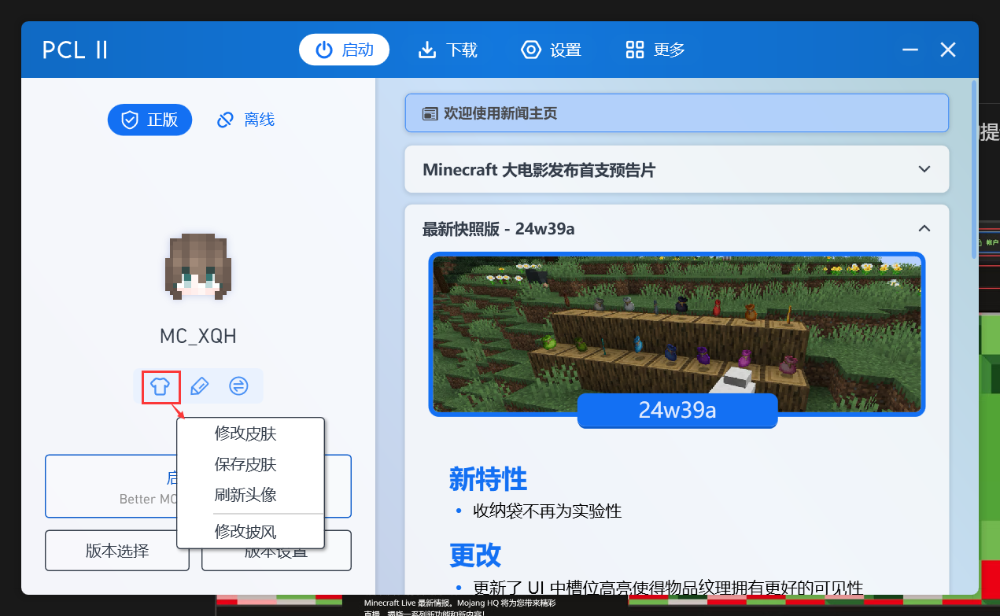
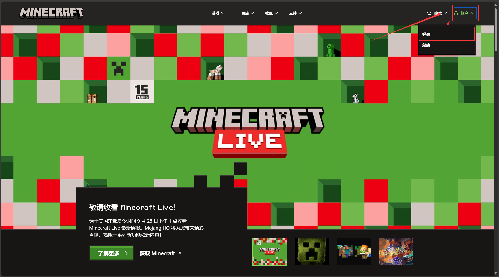
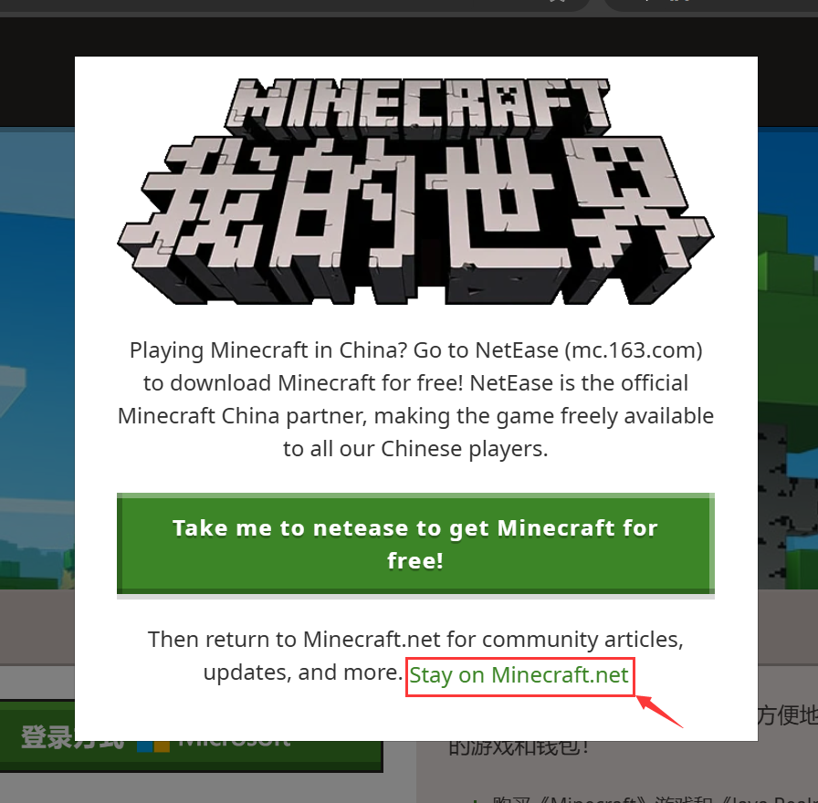

皮肤、披风、玩家名更改
Java版的皮肤文件是一个大小**6464**像素的png图片文件，你可以前往NameMC或是其他皮肤网站上下载由其他玩家制作的皮肤。
*披风是由Mojang官方发放给玩家的奖励，通常具有绝版性质。
一、通过启动器更换
在PCL2启动器登录正版账户之后，将鼠标指针移至玩家头像，点击下方浮现的 衣服 图标，即可更换皮肤和披风。
点击下方浮现的 铅笔 图标，即可跳转至Minecraft官网上的玩家名更改的界面。

二、手动更换
进入Minecraft官网（https://www.minecraft.net/），开始会弹出一个 提示前往下载中国版的提示 的页面，点击下方 继续浏览该网站 即可关闭。
之后点击左上角的 账户，点击 登录。

若有弹出这个窗口，点击 “Stay on Minecraft.net” 这行绿字即可关闭该窗口。接下来就根据网站的引导来登录你的微软账号。

登录完后，转到Java版的玩家档案里。
1. 更换皮肤、披风
点击 更换皮肤。
先选择你的玩家模型。classic 模型的手臂模型会粗一点（44），即对应 史蒂夫Steve 模型，slim 模型的手臂会更细一点（43），即对应 艾利克斯Alex 模型。
选择完后，点击上次皮肤图片文件。
你可以在下面更换你拥有的披风。
2. 更改玩家名
点击 档案名称。之后填写你修改后的玩家名即可。
另外，玩家名修改有30天的冷却时间，且这30天内，旧的玩家名不能被其他玩家使用。
仍有不理解的地方或问题？在文章的相应位置评论留言↑↑↑
或在Github上反馈文章问题。